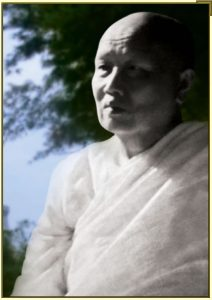

Мэ Чи Кэу (1901-1991)

Мэ Чи Кэу считается одной из немногочисленных архати современности, т.е. достигших конечной цели буддизма — ниббаны. «Мэ Чи» на тайском означает «белая мать». Поскольку женская линия посвящения в монахини была утеряна в Тхераваде ещё в 11 веке, в Тайланде было решено утвердить институт «белых матерей», которые принимают 8 или 10 обетов мирянина, что включает в себя целибат и по сути равнозначно обетам младшего монаха — саманеры. Посвящённая в Мэ Чи женщина обривает голову и надевает особые белые одеяния, откуда и происходит название.
Мэ Чи Кэу родилась в 1901 году в буддийской семье в небольшой деревне на северо-востоке Тайланда. Девочку назвали Тапай. С самого раннего детства её посещали различные видения. По её словам, ещё будучи совсем маленькой, она могла видеть невидимых существ, которые играли с ней и присматривали за ней. Когда ей было 5 лет, умерла её мать, что оказало на неё сильное влияние. В возрасте 7 она начала вспоминать некоторые прошлые жизни — человеческие и не только, и впервые решила рассказать о своих видениях отцу. Однако тот, хотя и будучи искренним верующим буддистом, был очень недоволен и потребовал прекратить подобные рассказы.
В 1914 в деревню прибывает Аджан Сао — известный монах-аскет того времени. Тапай вместе с семьёй посещает его лекции и чувствует сильное влечение к учению Будды. Когда в одной из бесед Аджан упоминает, что заслуги пострижения в Мэ Чи (белые матери) намного больше, чем просто поддержание монахов, это откладывает в её сознании сильный отпечаток, что в будущем сыграет свою роль.
Через три года, в 1917 году, Аджан Сао вместе с группой монахов оставляет деревню, но буквально сразу в след за ним приходит, вероятно, самый выдающийся и известный мастер медитации того времени — Аджан Ман Буридатто. Аджан Ман всегда собирал подаяния молча, но иногда напрямую обращался к юной Тапай и настаивал на том, чтобы она чаще ходила слушать его лекции о Дхамме. На них он многократно подбивал её начать практику медитации, предлагая ту же несложную технику, что и Аджан Сао — настраивание всей своей осознанности на два слога «буд-дхо» которые произносились поочерёдно, соответствуя каждому вдоху и выдоху. Одним вечером она решила попробовать и после 15 минут интенсивного сосредоточения на «буд-дхо» её ум впал в глубочайшее состояние самадхи, где не было ни мыслей, ни звуков. В этом состоянии у неё возникло видение того, что она умерла, а Аджан Ман указывал на её труп, и по мере того как тело распадалось, объяснял принцип непостоянства. Впоследствии Аджан Ман рассказал ей, что такие видения естественным образом могут появиться в состоянии глубокого самадхи, и нужно просто расслабиться и позволить им происходить своим чередом.
Впоследствии Аджан Ман объявил жителям о том, что ищет подходящее место для того, чтобы провести здесь сезон дождей. Тапай, услышав требования для такого места, вспомнила об участке на земле, что принадлежала её семье. Посовещавшись с отцом и братьями, она предложила Аджану Ману осмотреть место. Тот объявил, что это самое подходящее место, и, более того, решил основать здесь монастырь. Тапай ничего не оставалось кроме как формально предложить землю в качестве дара от всей её семьи, на что Аджан Ман сказал, что этот дар не позволит им пребывать в бедности уже в этой самой жизни. Так началось строительство нового монастыря Аджана Мана — Ват Нонг Нонг. Отец Тапай вместе с другими жителями взялись за работы и построили бамбуковые хижины для Аджана и группы монахов. Старейшины деревни помогли в постройке главной залы, в которой могли собираться до 50-60 монахов.
Поскольку Тапай обладала столь выдающимся потенциалом в медитации, то, по мере того, как она медитировала каждый вечер, Аджан Ман направлял свой ум на познание её состояний и в некоторых случаях вызывал её в монастырь вместе с семьёй, чтобы дать наставления на предмет того, как поступать с теми или иными психическими феноменами, с которыми она сталкивается в медитации. После окончания сезона дождей Аджан Ман собрался покинуть деревню и предложил Тапай постричься в Мэ Чи и следовать за ним и его группой учеников. Однако отец не разрешил этого сделать, так как считал, что позже, когда она расстрижётся, ей будет трудно найти мужа и устроить нормальную семейную жизнь. Аджан Ман сказал ей, чтобы она не волновалось и была терпеливой, и что её время ещё придёт. Однако он категорически запретил ей практиковать медитацию в его отсутствии и сказал, чтобы она довольствовалась обычной мирской жизнью. Он пообещал, что в будущем будет момент, когда она сможет возобновить медитацию под руководством выдающегося учителя. Аджан Ман видел, что её впечатлительность велика, и без руководства со стороны она пойдёт не тем путём. Так как вера Тапай по отношению к Аджану была велика, она прекратила практику, отложив её, как потом выяснилось, на долгие 20 лет.
После того, как она прервала практику, её жизнь стала безрадостной, Тапай решилась целиком погрузиться в работу и различные домохозяйские дела. Время шло, и из-за её многочисленных стараний, хороших качеств и талантов, у неё стали появляться поклонники. Хотя сама Тапай не собиралась выходить замуж, в 17 лет родители (её отец женился на новой жене) выдали её за юношу по имени Бунма, а перечить родителям из-за уважения к ним она не стала. Тапай переехала жить в дом к мужу, неподалёку от своих родных. Муж был беззаботным и беспечным, флиртовал с другими женщинами, тогда как она была трудолюбива и принимала всё так, как есть, целиком посвятив себя тяжёлой работе. Впоследствии он стал запрещать ей посещать монастырь, читать паритты, давать монахам еду, всячески ограничивая всю её религиозную деятельность, считая, что женщина должна находиться в семье, а не в религиозном мире. Ей ничего не оставалось кроме как соглашаться, поскольку выхода она не видела. Тогда она решила выстраивать практику в повседневной жизни, сосредотачиваясь на повседневных действиях, преобразуя негодования и обиды в бескорыстное услужение и любовь.
Таким образом прошли сложные и мучительные десять лет. За всё это время у неё так и не появилось детей, а любые попытки упросить мужа, чтобы он разрешил ей постричься в Мэ Чи, терпели неудачу. Родственники беспокоились о её бездетном будущем — о том, кто будет заботиться о ней в старости. Поэтому её двоюродная сестра, родившая уже несколько детей, решила отдать ей своего младенца. Тапай очень привязалась к малышке и называла её «маленькой прелестью» (на тайском «Кэу»). Отсюда Тапай стали называть Мэ Кэу, что означает «Мать Кэу». Шли годы и её приёмная дочка росла. Однако всю семейную жизнь Тапай не забывала о пророчестве Аджана Мана, и внутри неё всегда теплелась надежда и желание стать Мэ Чи. Поэтому, когда дочери исполнилось 10 лет, она в очередной раз попросила мужа отпустить её на сезон дождей в сельский монастырь, чтобы там временно постричься в Мэ Чи. Однако муж и в этот раз приказал ей забыть о подобных мечтаниях. Все родственники знали о желании Тапай, и потому в тот момент в дело решил вмешаться её дядя, который сумел убедить её мужа Бунму разрешить ей постричься хотя бы временно на сезон дождей. Так начало сбываться предсказание Аджана Мана 20-летней давности.
Вскоре она постриглась в Мэ Чи в Ват Нонг Нонг, приняв 8 мирских обетов. Церемонию проводил Аджан Кхампан. Ей выделили небольшой бамбуковый домик с травяной крышей. Она каждый день вставала в 3 часа утра и начинала медитацию ходьбы, осознанно отмечая каждый шаг слогами «буд-дхо». Затем, когда сосредоточение устанавливалось, она садилась и медитировала сидя, а к полудню спешила в главную залу для декламации пудж вместе с другими Мэ Чи и монахами. Затем помогала готовить еду и усердно выполняла различные работы по монастырю, после чего возвращалась к медитации. Далее наступала пора для стирки и прочих работ по монастырю, а затем — вечернаяя пуджа, после которой все Мэ Чи опять возвращались к медитации.
Практика давалась ей с трудом, поскольку с момента последних медитаций прошло 20 лет сложной семейной жизни, что, конечно же, наложило на ум многочисленные отпечатки. Тем не менее, Мэ Чи Кэу прилагала максимум усилий, вспоминая свою тяжёлую работу на поле. В конце концов ей удалось на краткий миг погрузиться в глубочайшие глубины своего ума, в состояние абсолютного спокойствия. Как только она вышла из него, она поняла, что смогла восстановить утраченные умения в медитации. Тем не менее, практика всё равно не была равномерной. Мэ Чи Кэу пришлось обучаться правильному балансу питания — поскольку слишком много еды или же слишком мало не давало телу и уму находиться в гармонии. Голод порождал бесконечные мысли, а набитый живот — леность и замутнённую осознанность. Во время второго месяца она пробовала уделять как можно меньше внимания сну — она принимала все позы, кроме лежачей, пробуя одну из аскетических практик «сидящего». В отличие от голодовок, эта практика оказалась действенной, и почти три недели ум находился в состоянии яркости и собранности. Медитация углублялась и её уверенность в практике росла. Случалось, что она могла предвидеть события будущего, а также воспринимать нематериальные миры. Одной ночью ей пришло видение её собственного разглагающегося тела, но, несмотря на ужас этого восприятия, вспомнив наставления Аджана Мана, она выстояла и смогла превратить это видение в практику осознавания распада и смерти.
Вскоре курс медитации сезона дождей стал подходить к концу. Приёмная дочь Кэу сообщила, что отец пропадает из дома и возвращается пьяным. Иногда Мэ Чи Кэу навещала дом, но никогда не заставала мужа. Ходили слухи, что он ходит к другой женщине из соседней деревни и сильно пьёт. К тому же ей очень не хотелось возвращаться обратно к домохозяйской жизни. Тогда она решила часть времени проводить дома, а ночь — в монастыре, так и не сняв обеты Мэ Чи. Это сильно разозлило мужа, и он сказал, что их браку настал конец — а своё имущество она получит только через суд. Возвращаясь в монастырь Мэ Чи Кэу ощутила всю горечь мирской жизни и поклялась никогда не складывать обеты Мэ Чи.
В то время настоятель монастыря решил основать новый уединённый монастырь на горе в 6 милях от деревни, куда добраться было достаточно непросто. Вся группа Мэ Чи отправилась вместе с ним помогать в строительстве. Через какое-то время дошли известия, что муж Мэ Чи Кэу женился ещё раз и переехал вместе с дочерью в другую провинцию. Однако Мэ Чи Кэу не спешила вернуться в родной сельский монастырь, а решила остаться с настоятелем в новом горном монастыре. В тот момент была большая проблема с водой для нового монастыря, и это угрожало окончанию работ и его закрытию. Тогда Мэ Чи Кэу с твёрдым намерением обнаружить воду погрузилась в медитацию и ей пришло видение 11 источников, скрытых в густых зарослях, неподалёку от большой пещеры на горе. Эту местность разведали, и к огромной радости настоятеля, там действительно обнаружили источники. В то время Мэ Чи начала видеть в медитации всевозможных существ из самых разных тёмных и ярких миров океана сансары, развивая тем самым одну из шести сверхспособностей. По её словам, эти миры являются различными уровнями сознания, но не физическими уровнями существования, поэтому понимание того, что миры дэвов находятся физически выше, а ады — физически ниже — является неправильным.
Годы шли и медитация Мэ Чи Кэу развивалась в этом ключе. Но её главная ошибка состояла в том, что в медитации она всегда направляла ум на познание внешних феноменов, но не внутренних, не исследуя таким образом свой собственный ум и его загрязнения. Настоятель монастыря — Аджан Кхампан — хоть и имел некоторые способности в медитации, не мог выявить у неё этой ошибки, поскольку сам продвинулся не дальше неё. Таким образом Мэ Чи Кэу развилась чрезмерная привязанность к состоянию самадхи и восприятию медитативных феноменов. Она прожила на горе с 1937 по 1945 год, пока японские войска не вторглись на территорию Тайланда, соорудив неподалёку военную базу, из-за чего некоторым монахам Мэ Чи пришлось перебраться в более уединённое место — пещеры Нок Краба.
После того, как они вернулись, выяснилось, что из-за чрезмерного общения с одной Мэ Чи, настоятель Аджан Кхампан объявил о решении вернуться к мирской жизни и жениться на этой Мэ Чи, что ввергло многих в шок. В тот момент многие Мэ Чи практиковали и получали наставления под его учительством вот уже 8 лет. На собрании Мэ Чи было решено, что они отправятся в деревню и попробуют создать новый монастырь, без участия монахов, что им в конечном счёте удалось сделать благодаря помощи старейшин деревни и селян.
Вскоре она встретила старшего монаха Аджана Конгму и поделилась с ним возникшими сомнениями относительно правильности её практики. Аджан Конгма предложил, что ей следует обратить ум на рассмотрение 32 частей собственного тела, но Мэ Чи Кэу не решалась прервать тот простой метод, который дал ей Аджан Ман несколько десятилетий назад. Однако её сомнения росли и это не позволяло достигать даже прежних уровней медитации. Поэтому впоследствии она всё-таки решила поступить так, как посоветовал Аджан Конгма. Эта практика значительно уменьшила её очарованность телом и создание чувства самости на основе этого. Аджан Конгма подтвердил, что теперь она на правильном пути. Однако сомнения полностью не ушли, и она решила, что нужно продолжить поиски знающего учителя.
Поэтому, как только появились известия об Аджане Мане, Мэ Чи Кэу собрала группу и отправилась в 12-дневное путешествие в ту область, где находился в данный момент Аджан. Она поведала ему о своих успехах в медитации, и тот дал ей различные дальнейшие методы практики. Однако развитая за долгие годы тенденция не могла быть так просто устранена, и Аджан Ман знал это, поскольку предвидел, что её ошибку исправит в будущем другой учитель, а не он сам. Именно таковой была её участь. Впоследствии Аджан Ман сказал ей, чтобы она ещё раз через некоторое время навестила его, однако этого так и не произошло — Мэ Чи Кэу находилась в родном сельском монастыре в ту ночь, когда умер Аджан Ман, что случилось 10 ноября 1949 года.
Два года спустя, в 1951 году, к северу от её родной деревни, в пещере Нок Ан, остановился ученик Аджана Мана — Аджан Маха Буа Ньянасампанно вместе с группой странструющих монахов. Мэ Чи Кэу, узнав об этом, сразу же отправилась к нему. Послушав рассказ об истории её жизни и практике, Аджан Маха Буа мгновенно понял ошибку Мэ Чи. Он жёстко стал наставивать на том, чтобы она не следовала своим видениям, а направила ум самадхи на познание самого же ума как такового. Мэ Чи Кэу категорически отказывалась менять линию своей медитации, но, в конечном счёте, под неутомимым давлением Аджана, ему удалось сломить её глубокую привязанность и упрямство. Она смогла увидеть собственную сильнейшую склонность ума обращаться вовне, и вскоре ей удалось избежать подобной привычной тенденции, научившись удерживать ум внутри и внимательно исследовать его на предмет привязанностей.
Затем он научил её медитации на частях тела. Мэ Чи стала быстро осваивать эту практику по мере того как её внутреннему взору всё ярче и чётче представали картины распада тела и отдельных его частей. Практика углубилась и появились видения отдельных составляющих материи, из которых собрано тело. Она продолжала пристальное наблюдение за элементами материи и ума, везде и всюду обнаруживая отсутствие какой-либо неизменной сущности, которая пребывала бы среди них. Постепенно продвигаясь далее, она обнаружила самый центр ума — сияющую «неизменную» осознанность, что было настолько притягательным, чудесным и приятным, что она сразу же приняла это за полное освобождение — ниббану. Рассказав Аджану о своём достижении, он отметил, что это ещё не финал, и именно здесь и находится последний рубеж борьбы с неведением. Он настоял на том, чтобы она длительно и максимально тщательно рассматривала эту неизменную яркую и чистейшую суть ума. По мере дальнейшей практики ей удалось увидеть наитончайшую форму неудовлетворительности в этом феномене — мельчайшие изменения, которых ранее она не могла распознать.
Утром 1 ноября 1952 года Мэ Чи Кэу неспешно подошла к бамбуковой платформе и села — установив идеальную и кристально чистую осознанность. Она не стала направлять внимание на что-либо конкретное, пребывая в пустотности от всего, и, внезапно, та самая ярчайшая неизменная сущность ума мгновенно разверзлась и рассеялась, явив подлинное прямое знание освобождения. После она решила направить ум на познание предыдущих жизней и поразилась насколько много раз рождалась и умирала, так как все эти жизни невозможно было перечесть.
Мэ Чи Кэу внутренне не ощутила потребности рассказывать о своём опыте, намереваясь все оставшиеся годы прожить в уединении, однако впоследствии всё же решила, что сделает всё возможное, чтобы помочь другим реализовать конечную цель, несмотря на отсутствие учительского дара и красноречия. Она была простой деревенской женщиной и достижение архатства не изменило этой особенности её характера. Она никогда не была сильна в риторике и все её наставления были очень короткими и прямыми.
В 1953 Аджан Маха Буа предложил ей отправиться в свою родную провинцию примерно в 100 милях от её родной деревни, где она пробыла до 1967 года, помогая в развитии нового монастыря и наставляя других Мэ Чи, после чего вернулась обратно в родные места, где и оставалась на протяжении 24 лет, пока не умерла в идеальном спокойствии 18 июня 1991. В последние годы она страдала от сильных болей в спине и от глоукомы на одном глазу, однако, по словам врачей, Мэ Чи Кэу никогда ни на что не жаловалась.
На кремации присутствовало 200 монахов и несколько тысяч мирян. Пористые фрагменты костей были собраны, после чего, через некоторое время, они преобразовались прочные гладкие цветные камушки и кристаллы, что многими расценивалось как доказательство её архатства. 21 мая 2006 в её родной деревне была построена и открыта ступа — 24 метра высотой, окружённая чистым лотосовым прудом — в которой хранятся её реликвии. Ступа стала местом паломничества многочисленных буддистов со всего мира. Внутри ступы расположены три статуи Мэ Чи Кэу из композитных материалов, а на втором этаже находится её восковая статуя. Реликвии представлены для обозрения на алтаре.